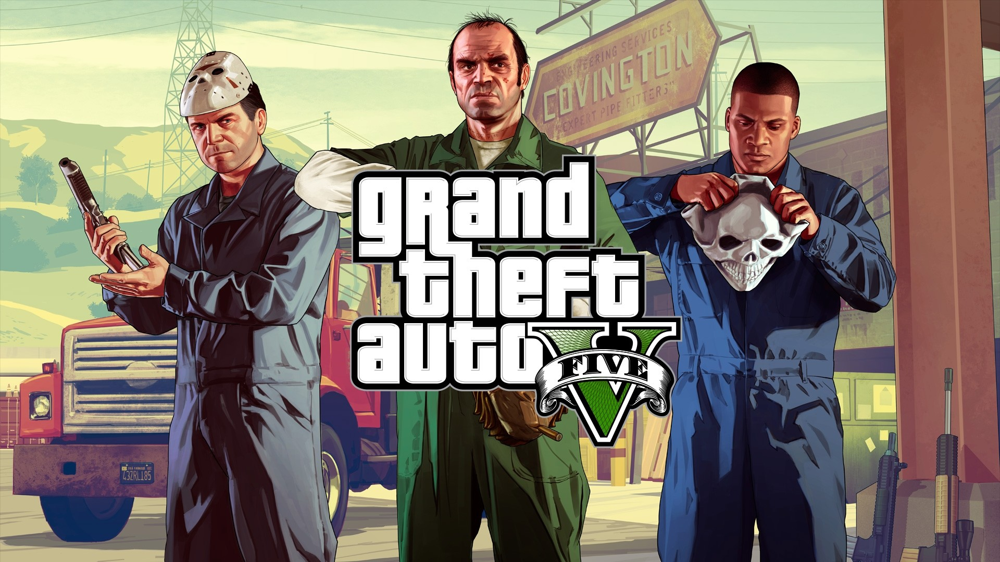
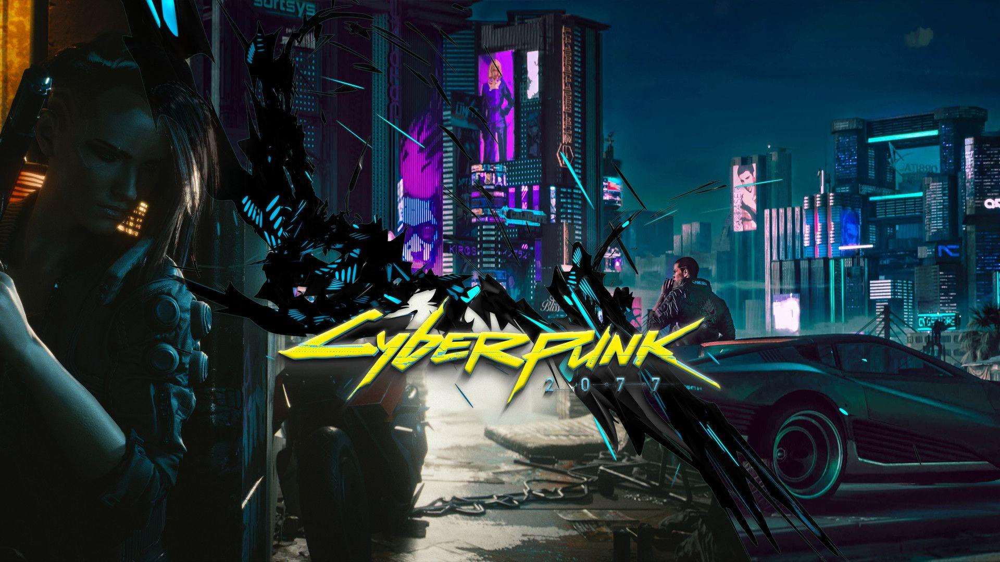
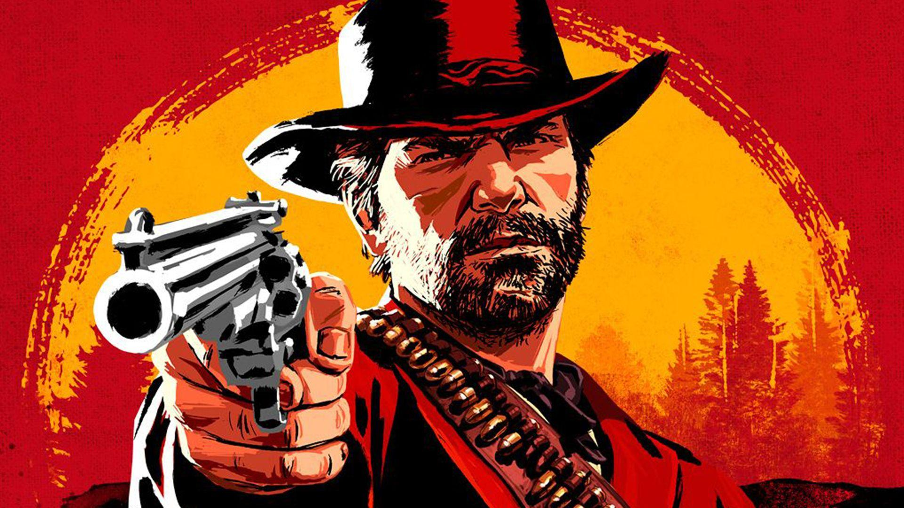
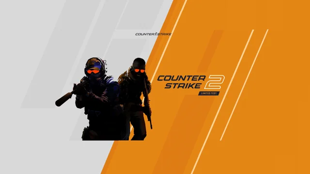
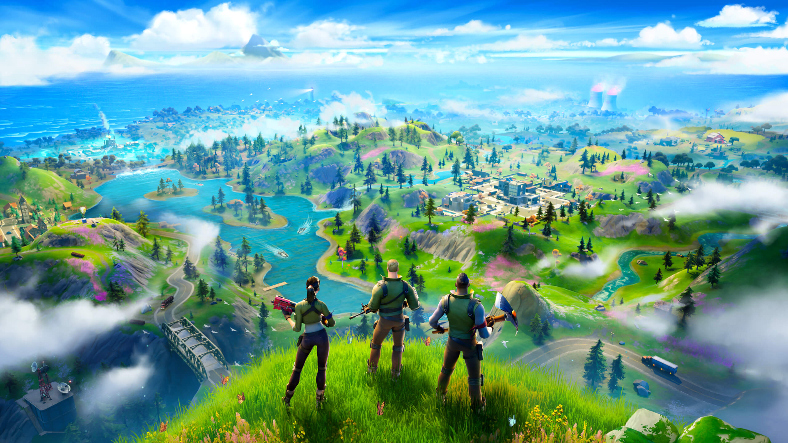
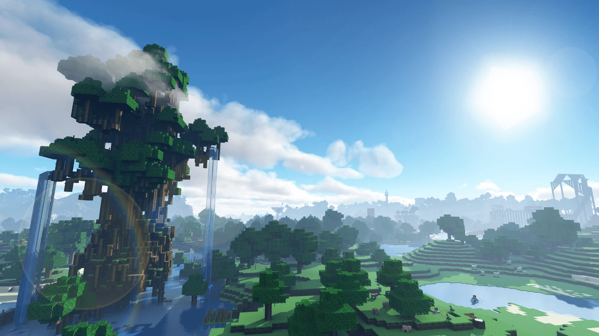
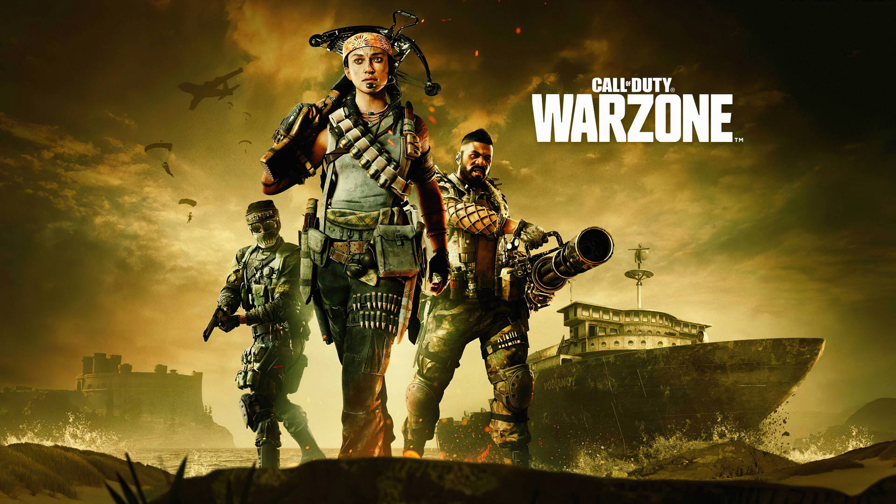
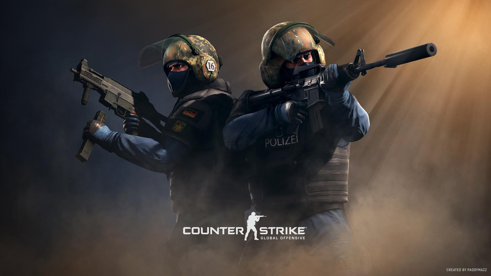
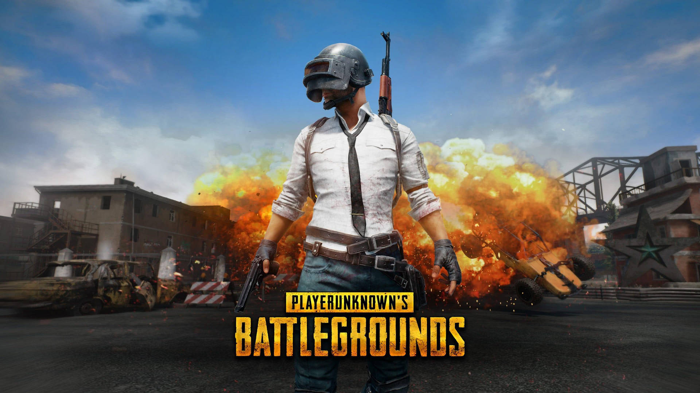

O Jogo irá rodar ?
Verifique se o jogo irá correr no seu computador. Seleccionar o jogo para proceder à selecção dos componentes do computador.
Podem rodar esses jogos populares em seu PC?

Grand Theft Auto V / GTAV
Desenvolvedor: Rockstar North
Distribuidor: Rockstar Games
Data de lançamento: 14 de abril 2015 (10 anos atrás)
A Nossa classificação dos utilizadores: 4.2/5
Nível de exigência de hardware: 1.2/10 - não exigente
Suporte para traçado de raios: Sem dados
Requisitos oficiais do sistema de GTA V
Para executar o GTA V, precisará de pelo menos 4 GB de RAM e 120 GB de espaço livre em disco. O jogo requer uma placa gráfica mínima como a GeForce 9800 GT, mas para uma melhor experiência, os criadores recomendam a utilização de uma GeForce GTX 660. Quanto ao teu CPU, um Core 2 Quad Q6600 é o mínimo, mas se quiseres aumentar as definições e desfrutar de uma jogabilidade mais suave, aponta para um Core i5-3470 ou melhor.
Requisitos Mínimos:
- Placa de vídeo: NVIDIA 9800 GT 1GB / AMD HD 4870 1GB (DX 10, 10.1, 11)
- Processador: Intel Core 2 Quad CPU Q6600 @ 2.40GHz (4 CPUs) / AMD Phenom 9850 Quad-Core Processor (4 CPUs) @ 2.5GHz
- Memória: 4 GB RAM
- Disco rígido: 120 GB available space
- Sistema operativo: Windows 10 64 Bit/ Windows 11 64 Bit
- DirectX: Version 10
Requisitos Recomendados
- Placa de vídeo: NVIDIA GTX 660 2GB / AMD HD 7870 2GB
- Processador: Intel Core i5-3470 @ 3.2GHz (4 CPUs) / AMD X8 FX-8350 @ 4GHz (8 CPUs)
- Memória: 8 GB RAM
- Disco rígido: 120 GB available space
- Sistema Operativo: Windows 10 64 Bit
- DirectX: Version 10

Cyberpunk 2077
Desenvolvedor: CD Projekt RED
Distribuidor: CD Projekt RED
Data de lançamento: 10 de dezembro 2020
A Nossa classificação dos utilizadores: 3.7/5
Nível de exigência de hardware: 5.8/10 - significamente exigente
Suporte para traçado de raios: Sim
Requisitos oficiais do sistema de Cyberpunk 2077
Para executar o Cyberpunk 2077, precisará de pelo menos 12 GB de RAM e 70 GB de espaço livre em disco. O jogo requer uma placa gráfica mínima como a Radeon RX 580, mas para uma melhor experiência, os criadores recomendam a utilização de uma GeForce RTX 2060. Quanto ao teu CPU, um Core i7-6700 é o mínimo, mas se quiseres aumentar as definições e desfrutar de uma jogabilidade mais suave, aponta para um Core i7-12700 ou melhor.
Requisitos Mínimos:
- Placa de vídeo: Geforce GTX 1060 6GB or Radeon RX 580 8GB or Arc A380, VRAM: 6 GB
- Processador: Core i7-6700 or Ryzen 5 1600
- Memória: 12 GB
- Disco rígido: 70GB SSD
- Sistema Operativo: 64-bit Windows 10
- DirectX: Direct 12
Requisitos recomendados:
- Placa de vídeo: Geforce RTX 2060 Super or Radeon RX 5700 XT or Arc A770, VRAM: 8 GB
- Processador: Core i7-12000 or Ryzen 7 7800X
- Memória: 16 GB
- Disco rígido: 70GB SSD
- Sistema Operativo: 64-bit Windows 10
- DirectX: DirectX 12

Red Dead Redemption 2
Desenvolvedor: Rockstar Games
Distribuidor: Rockstar Games
Data de lançamento: 5 de Novembro 2019 (6 anos atrás)
A nossa classificação dos utilizadores: 4.3/5
Nível de exigência de hardware: 3.5/10 - bastante exigente
Suporte para traçado de raios: Não
Requisitos oficiais do sistema de Red Dead Redemption 2
Para executar o Red Dead Redemption 2, precisará de pelo menos 8 GB de RAM e 150 GB de espaço livre em disco. O jogo requer uma placa gráfica mínima como a Radeon R9 280, mas para uma melhor experiência, os criadores recomendam a utilização de uma Radeon RX 480. Quanto ao teu CPU, um Core i5-2500K é o mínimo, mas se quiseres aumentar as definições e desfrutar de uma jogabilidade mais suave, aponta para um Core i7-4770K ou melhor.
Requisitos Mínimos
- Placa de vídeo: Sem dados
- Processador: Intel Core i5-2500/ AMD FX-6300
- Memória: 8GB de RAM
- Disco Rígido: 150 GB available space
- Sistema Operativo: Windows 7- Service Pack 1 (6.1.7601), 64-bit
- DirectX: sem dados
Requisitos recomendados
- Placa de vídeo: Nvidia GeForce GTX 1060 6GB / AMD Radeon RX 480 4GB
- Processador: Intel Core i7-4770K / AMD Ryzen 5 1500X
- Memória: 12 GB RAM
- Disco Rígido: 150 GB available space
- Sistema Operativo: Windows 10 - April 2018 Update (v1803), 64-bit
- DirectX: Sem dados

Counter-Strike 2
Desenvolvedor: Valve
Distribuidor: Valve
Data de lançamento: 21 agosto 2012 (13 anos atrás)
A Nossa classificação dos utilizadores: 3.4/5
Nível de exigência de hardware: 1/10 - não exigente
Suporte para traçado de raios: Sem dados
Requisitos oficiais do sistema de Counter-Strike 2
Para executar o Counter-Strike 2, precisará de pelo menos 8 GB de RAM e 85 GB de espaço livre em disco. Quanto à sua CPU, um Core i5-750 é o mínimo.
Requisitos Mínimos
- Placa de vídeo: A placa de vídeo deve ter 1 GB ou mais e ser compatível com DirectX 11, com suporte para Shader Model 5.0.
- Processador: 4 threads de hardware da CPU - Intel® Core™ i5-750 ou superior
- Memória: 8 GB RAM
- Disco Rígido: 85 GB de espaço disponível
- Sistema Operativo: Windows® 10 (64-bit)
- DirectX: Version 11

Fortnite
Desenvolvedor: Epic Games
Distribuidor: Epic Games
Data de lançamento: 21 de Julho 2017
A nossa classificação dos utilizadores: 4.0/5
Nível de Exigência de hardware: 2/10
Suporte para traçado de raios: Sim
Requisitos oficiais do sistema de Fortnite
Para executar o Fortnite, precisará de pelo menos 8 GB de RAM e 30 GB de espaço livre em disco. O jogo requer uma placa gráfica mínima como a HD Graphics 4000, mas para uma melhor experiência, os criadores recomendam a utilização de uma Radeon R9 280. Quanto ao teu CPU, um Core i3-3225 é o mínimo, mas se quiseres aumentar as definições e desfrutar de uma jogabilidade mais suave, aponta para um Core i5-7300U ou melhor.
Requisitos Mínimos
- Placa de vídeo: Intel HD 4000 or AMD Radeon Vega 8
- Processador: Core i3-3225 3.3 GHz
- Memória: 8 GB
- Disco Rígido: 30 GB
- Sistema Operativo: Windows 7/8/10/11 64-bit or Mac OS Mojave 10.14.6
- DirectX: sem dados
Requisitos recomendados
- Placa de vídeo: Nvidia GTX 960, AMD R9 280 with 2 GB VRAM
- Processador: Core i5-7300U 3.5 GHz, AMD Ryzen 3 3300U, or equivalent
- Memória: 8 GB
- Disco Rígido: 30 GB
- Sistema Operativo: Windows 10/11 64-bit
- DirectX: 11

Minecraft
Desenvolvedor: Mojang
Distribuidor: Mojang
Data de lançamento: 18 de Novembro 2011 (14 anos atrás)
A nossa classificação de hardware: 3.6/5
Nível de exigência de hardware: 1/10 - não exigente
Suporte para traçado de raios: sem dados
Requisitos oficiais do sistema de Minecraft
Para executar o Minecraft, precisará de pelo menos 4 GB de RAM e 1 GB de espaço livre em disco. O jogo requer uma placa gráfica mínima como a GeForce 410M, mas para uma melhor experiência, os criadores recomendam a utilização de uma GeForce 710A. Quanto ao teu CPU, um Core i3-3210 é o mínimo, mas se quiseres aumentar as definições e desfrutar de uma jogabilidade mais suave, aponta para um Core i5-4690 ou melhor.
Requisitos mínimos
- Placa de vídeo: Intel HD Graphics 4000 ou AMD Radeon série R5. Dedicada: Nvidia GeForce série 400 ou AMD Radeon HD série 7000.
- Processador: Intel Core i3-3210 / AMD A8-7600 APU ou equivalente
- Memória: 4 GB (2GB free)
- Disco rígido: 1 GB deve ser suficiente para uma quantidade normal de mapas.
- Sistema operativo: Windows 7 ou posterior, OS X 10.9 Maverick, Linux
- DirectX: sem dados
Requisitos recomendados
- Placa de vídeo: GeForce série 700 ou AMD Radeon RX série 200 com OpenGL 4.5
- Processador: Intel Core i5-4690 / AMD A10-7800 ou equivalente
- Memória: 8 GB (4 GB livres)
- Disco rígido: 4 GB
- Sistema operativo: Windows 10 ou posterior, OS X 10.12 Sierra
- DirectX: sem dados

Call of Duty: Warzone
Desenvolvedor: Infinity Ward
Distribuidor: Activision
Data de lançamento: 10 de Março 2020 (6 anos atrás)
A nossa classificação dos utilizadores: 3.7/5
Nível de exigência de hardware: 3.2/10 - moderadamente exigente
Suporte para traçado de raios: sem dados
Requisitos oficiais do sistema de Call of Duty: Warzone
Para executar o Call of Duty: Warzone, precisará de pelo menos 8 GB de RAM e 175 GB de espaço livre em disco. O jogo requer uma placa gráfica mínima como a Radeon HD 7950, mas para uma melhor experiência, os criadores recomendam a utilização de uma Radeon R9 390. Quanto ao teu CPU, um Core i3-4340 é o mínimo, mas se quiseres aumentar as definições e desfrutar de uma jogabilidade mais suave, aponta para um Core i5-2500K ou melhor.
Requisitos mínimos
- Placa de vídeo: NVIDIA® GeForce® GTX 670 / GTX 1650 or AMD Radeon™ HD 7950
- Processador: Intel® Core™ i3-4340 or AMD FX-6300
- Memória: 8 GB RAM
- Disco rígido: 175 GB available hard drive space
- Sistema operativo: Windows® 7 64-bit (SP1) or Windows® 10 64-bit
- DirectX: DirectX 12
Requisitos recomendados
- Placa de vídeo: NVIDIA® GeForce® GTX 970 / GTX 1660 or AMD Radeon™ R9 390 / RX 580
- Processador: Intel® Core™ i5-2500K or AMD Ryzen™ 5 1600X
- Memória: 12 GB RAM
- Disco rígido: 175 GB available hard drive space
- Sistema operativo: Windows® 10 64-bit latest update
- DirectX: DirectX 12

Counter Strike Global Offensive
Desenvolvedor: Valve
Distribuidor: Valve
Data de lançamento: 21 de Agosto 2012 (13 anos atrás)
A nossa classificação dos utilizadores: 3.6/5
Nível de exigência de hardware: 1/10 - não exigente
Suporte para traçado de raios: sem dados
Requisitos oficiais do sistema de Counter Strike Global Offensive
Para executar o Counter Strike Global Offensive, precisará de pelo menos 2 GB de RAM e 15 GB de espaço livre em disco. Quanto à sua CPU, um Core 2 Duo E6600 é o mínimo.
Requisitos mínimos
- Placa de vídeo: A placa deve ter 256 MB ou mais, compatível com DirectX 9 e Pixel Shader 3.0
- Processador: Intel® Core™ 2 Duo E6600 or AMD Phenom™ X3 8750
- Memória: 2 GB RAM
- Disco rígido: 15 GB available space
- Sistema operativo: Windows® 7/Vista/XP
- DirectX: Version 9.0c

PUBG
Desenvolvedor: PUBG Corporation
Distribuidor: PUBG Corporation
Data de lançamento: 21 de Dezembro 2017 (8 anos atrás)
A nossa classificação dos utilizadores: 3.1/5
Nível de exigência de hardware: 3.2 / 10 - moderadamente exigente
Suporte para traçado de raios: sem dados
Requisitos oficiais do sistema de PUBG
Para executar o PUBG, precisará de pelo menos 8 GB de RAM e 40 GB de espaço livre em disco. O jogo requer uma placa gráfica mínima como a Radeon R7 370, mas para uma melhor experiência, os criadores recomendam a utilização de uma Radeon RX 580. Quanto ao teu CPU, um Core i5-4430 é o mínimo, mas se quiseres aumentar as definições e desfrutar de uma jogabilidade mais suave, aponta para um Core i5-6600K ou melhor.
Requisitos mínimos
- Placa de vídeo: Video card must be 1 GB or more, DirectX 11-compatible with Shader Model 5.0
- Processador: 4 hardware CPU threads - Intel® Core™ i5-750 or higher
- Memória: 8 GB RAM
- Disco rígido: 85 GB available space
- Sistema operativo: Windows® 10 (64-bit)
- DirectX: Version 11
Requisitos recomendados
- Placa de vídeo: NVidia GeForce GTX 1060 3GB / AMD Radeon RX 580 4GB
- Processador: Intel Core i5-6600K / AMD Ryzen 5 1600
- Memória: 16 GB RAM
- Disco Rígido: 50GB espaço livre
- Sistema operativo: 64-bit Windows 7, Windows 8.1, Windows 10
- DirectX: Version 11